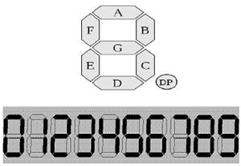
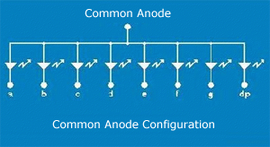
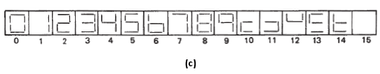
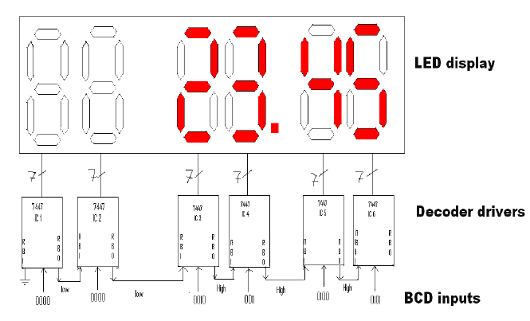

About the Experiment
This experiment enables a student to learn
- How to display decimal numbers 0-9 on a 7-segment LED display
- How to display a blank (making all the segments off)
- How to test the inputs LT (lamp test), ripple blanking input (RBI) and blanking input / ripple blanking output (BI/RBO) of TTL 7447 BCD-to-7-segment decoder
- How to blank out the leading 0s in a multiple digit display

The result of a processing unit needs to be conveniently displayed to a user for its proper interpretation. The seven-segment LED display is a very common output device used to display decimal numbers. The seven segments of the display are labeled as a to g as shown in Figure 1(a). Displays representing decimal numbers from 0 to 9 are depicted in Figure 1(b). For example, segments a, b, d, e, and g should be lit up to display decimal Of the several common seven-segment display packages available, generally the common-anode type display is predominantly used in engineering institutions. A typical 10-pin LED common-anode display package, its pin diagram and internal connections are shown in Figure

Figure 1

Figure 2(a) & 2(b)

Figure 2(c)
Fig:-2 . (a) 10 pin single-digit package (b) pin out diagram (c) Internal connection of common-anode LED package
It may be noted that the outputs of logic computation are normally available in binary form, which needs to be translated to seven-segment display code that causes appropriate segments on LED display to be lit up. One therefore needs a decoder in order to work with 7-segment LED display devices. Commercially available TTL 7447 BCD-to-seven segment decoder/driver, logic symbol of which is shown in Figure 3(a), can be conveniently used for controlling a common-anode type LED display device. The BCD number to be decoded is applied to the inputs D, C, B, and A. When the lamp test input (LT) is driven low, all the segments (a to g) are made to glow as all the seven outputs a to g go low. When the blanking input (BI) is made low, all the segments go off as all the seven outputs a to g go high. If driven low, the ripple-blanking input (RBI) darkens the display only when DCBA=LLLL (L=LOW). When the RBI input becomes active, the BI/RBO behaves like a ripple-blanking output (RBO) and becomes low. Note that the seven outputs of 7447 IC are all active low outputs.
The operation of 7447 decoder/driver IC is given in complete detail by the function table shown in Figure 3(b). The decimal displays generated by the 7447 decoder are shown in Figure 3(c). figure

Figure 3(a)

Figure 3(b)

Figure 3(c)
3.(a) Logic symbol for 7447 decoder IC (b) Function Table of 7447 decoder (c) Display produce for different combination of D,C,B,A inputs of 7447 decoder
It may be noted that invalid BCD inputs (corresponding to the decimal numbers 10, 11, 12, 12, 14, and 15) can produce distinct outputs through the 7447 decoder. The 7447 decoder is typically connected to a common-anode 7-segment LED display device as shown in Figure 4. The presence of the current-limiting 330 Ω resistance between the power supply and the common anode terminal of the LED block avoids the need to connect seven resistors between the outputs a-g of the decoder and the corresponding cathode terminals of the LED block.figure

Applications like calculator require that the leading zeros be blanked out. Figure 5 shows the use of several 7447 decoder/drivers controlling a group of six LED displays as in a cash register. The present inputs to the six decoders are shown towards the bottom of Figure 5. The current BCD input is 0000 0000 0010 0011 0100 0101 (002345 in decimal). On blanking of the two left zeros, the display should read 23.45. Blanking of the leading 0s is taken care of by connecting the RBI and RBO terminals of pairs of 7447 decoder ICs as shown in Figure 5.Inspecting from left to right in Figure 5, note that RBI input terminal of IC1 is grounded. As its BCD input is 0000, the display is blanked out. Also, the RBO output of IC1, which is made to go low, is connected to the RBI input of IC2. As BCD input of IC2 is 0000, and RBI is low, its display is also banked out. This makes RBO of IC2 low, and this low level is passed to RBI of IC3. However, as BCD input of IC3 is 0010 (non-zero), display of IC3 is not blank. Thus RBO of IC3 is high, and this high level is passed to RBI of IC4. Note that once the displays to the right of IC2 are non-blank, even if some BCD input appears as 0000, the 0 will be displayed and not blanked out, for the RBI input will not be activated due to the nature of the connections between any two neighboring ICs figure.

Figure 5

Aim of the Experiment
The principal objective of this experiment is to fully understand the functions of a BCD-to-7-segment decoder (IC 7447) and use it to control the operations of a common-anode 7-segment LED display.

Please follow these steps to do the experiment.
Part 1:
- At first go through the 7 Segment Decoder Circuit on the virtual workspace. Now see that IC 7447 is connected to the LED display package complete with VCC, GND and current-limiting resistor. Verify that the sixteen 7-segment patterns appear for 16 possible combinations of the 4-bit word DCBA while keeping LT (lamp test) and BI (blanking input) inputs high. Note that RBI should be kept high for displaying the 7-segment pattern for 0.
- Next, applying a low level signal to BI input, verify that all segments are off irrespective of the logic level of any other input..
- Next, setting RBI (ripple blanking input), D,C, B, and A to low level and setting LT input to high level, verify that all segments go off, and the RBO (ripple blanking output) output goes to a low level..
- Next, setting BI/RBO input to high and making LT input low, verify that all segments are lit up.
Part 2:
- See how the three instances each of 7447 decoder and common-anode LED display package, are connected, test how in case of a multiple-digit display, the leading zeros can be blanked out.
- Generate table 1 for showing the status (low/high) of the seven segment o/ps a,b,c,d,e,f and g for different combinations of BCD inputs D,C,B and A, when the controlling input LT,BI/RBO and RBI all are inactive,i.e High..
- Generate table 2 to show the precedence of controlling inputs LT,BI/RBO and RBI..
- Write your observations on blanking of leading zeros in case of multiple (here, three) digit display.
- Note:- RBI of the leftmost decoder DEC1= 0 (a) Select DCBA of Dec1 to be zero(0000) while DCBA of Dec2 (the middle decoder) and Dec3 (the rightmost decoder) to the nonzero ,i.e any combination from 0001 to 1001. (b) Select DCBA=0000 for Dec1 as well as Dec2 while for Dec3, select DCBA to be of any combination between 0001 to 1001. (c) Select DCBA=0000 for all the three decoders Dec1,Dec2 and Dec3. (d) Select DCBA nonzero for all the three decoders Dec 1,dec2 & Dec3, Note:- Record the states of the three displays for all the above four cases.

|
Help
|
|

Test Your Knowledge!!

Books
- Digital Principles and Applications, by Leach and Malvino.
- Digital Logic Design, Leach, by Malvino, and Saha
- Engineering Digital Design, by Richard F. Tinder.
- Digital Logic and Computer Design, by M. Morris Mano
- Digital Systems: Principles and Applications, Neal S. Widmer , Ronald J. Tocci , Gregory L. Moss